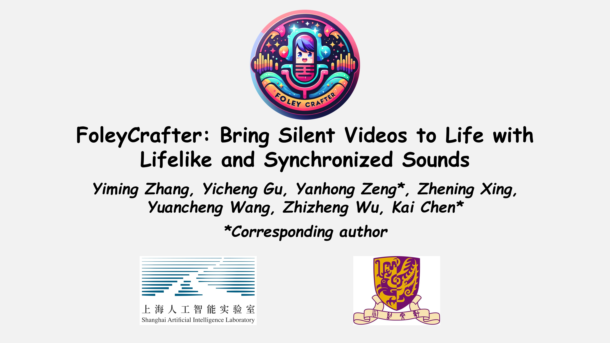

|
Yiming Zhang 张倚铭 I am currently a PhD. candidate jointly at USTC (中国科学技术大学) and Shanghai AI Laboratory, advised by Yanhong Zeng and Kai Chen. Before that, I received my bachelor's degree of B.Eng. from Dalian University of Technology in 2024. My research interests focus on Generative AI including Video, Audio and Multimodal Generation. Email / Google Scholar / Twitter / Github |
|
News
|
Research |

|
PIA: Your Personalized Image Animator via Plug-and-Play Modules in Text-to-Image Models
Yiming Zhang*, Zhening Xing*, Yanhong Zeng, Youqing Fang, Kai Chen CVPR, 2024 project page / video / arXiv / demo / code 
PIA can animate any images from personalized models by text while preserving high-fidelity details and unique styles. |
|

|
FoleyCrafter: Bring Silent Videos to Life with Lifelike and Synchronized Sounds
Yiming Zhang, Yicheng Gu, Yanhong Zeng, Zhening Xing, Yuancheng Wang, Zhizheng Wu, Kai Chen arxiv, 2024 project page / video / arXiv / demo / code 
FoleyCrafter is a video-to-audio generation framework which can produce realistic sound effects semantically relevant and synchronized with videos. |
Working Experience |
 |
Shanghai AI Laboratory
Researcher Intern, 2023.07 ~ Present |
Awards |
- Invited Talk: Personalized Image Animator (OpenMMLab on Bilibili Live 2024)
- Outstanding Undergraduate in 2024.
- National Scholarship in 2022 (Top 1% in DUT).
- Merit Students.
- First Prize Excellence Scholarship.